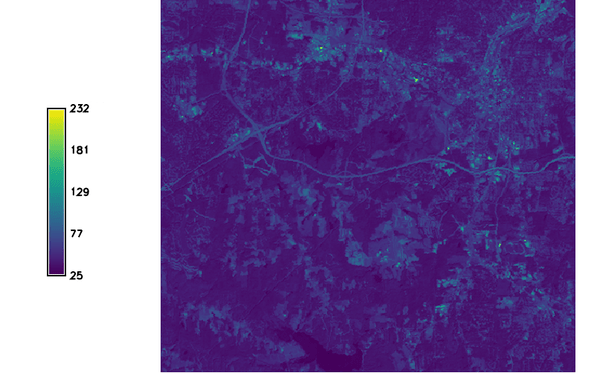
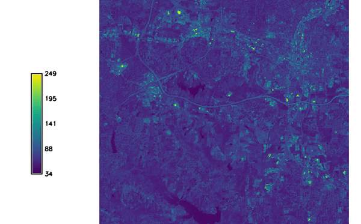

DESCRIPTION
i.albedo calculates the albedo, that is the Shortwave surface
reflectance in the range of 0.3-3 micro-meters. It takes as input
individual bands of surface reflectance originating from MODIS, AVHRR, Landsat
or Aster satellite sensors and calculates the albedo for those. This is
a precursor to r.sun and any energy-balance processing.
NOTES
It uses for Landsat 8 the weighted average reflectance (temporary solution
until an algorithm is found).
It assumes MODIS product surface reflectance in [0;10000].
EXAMPLE
The following example creates the raster map "albedo_lsat7_1987" from the
LANDSAT-TM5 bands in the North Carolina dataset:
g.region raster=lsat5_1987_10 -p
i.albedo -l input=lsat5_1987_10,lsat5_1987_20,lsat5_1987_30,lsat5_1987_40,lsat5_1987_50,lsat5_1987_70 output=albedo_lsat7_1987

Figure: Resulting albedo map from LANDSAT 5
The following example creates the raster map "albedo_lsat7_2000" from the
LANDSAT-TM7 bands in the North Carolina dataset:
g.region raster=lsat7_2000_10 -p
i.albedo -l input=lsat7_2000_10,lsat7_2000_20,lsat7_2000_30,lsat7_2000_40,lsat7_2000_50,lsat7_2000_70 output=albedo_lsat7_2000

Figure: Resulting albedo map from LANDSAT 7
TODO
Maybe change input requirement of MODIS to [0.0-1.0]?
SEE ALSO
r.sun,
i.vi
References
For a 2 band determination of the Aster BB Albedo see the following:
Salleh and Chan, 2014. Land Surface Albedo Determination: Remote Sensing
and Statistical Validation. in proceedings of FIG 2014
(PDF)
AUTHOR
Yann Chemin